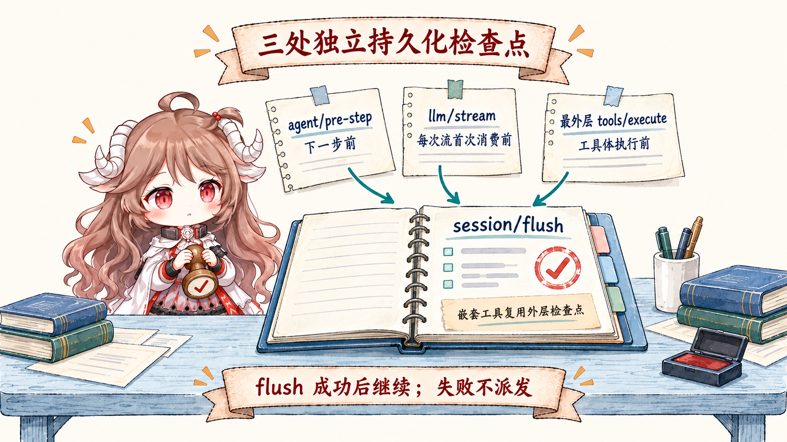
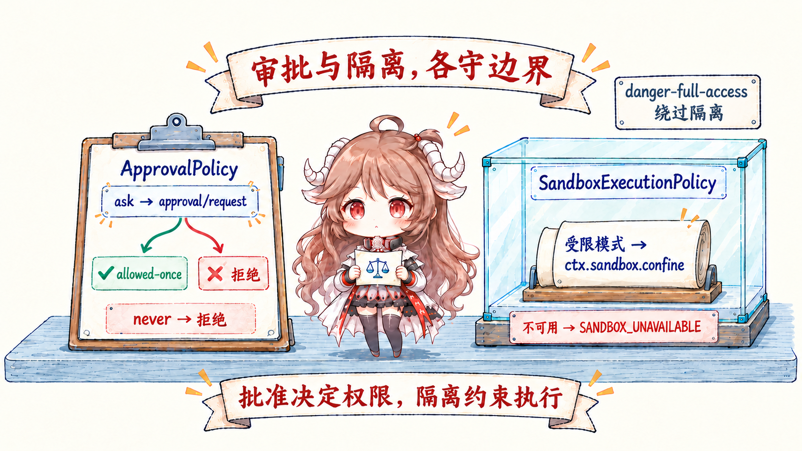
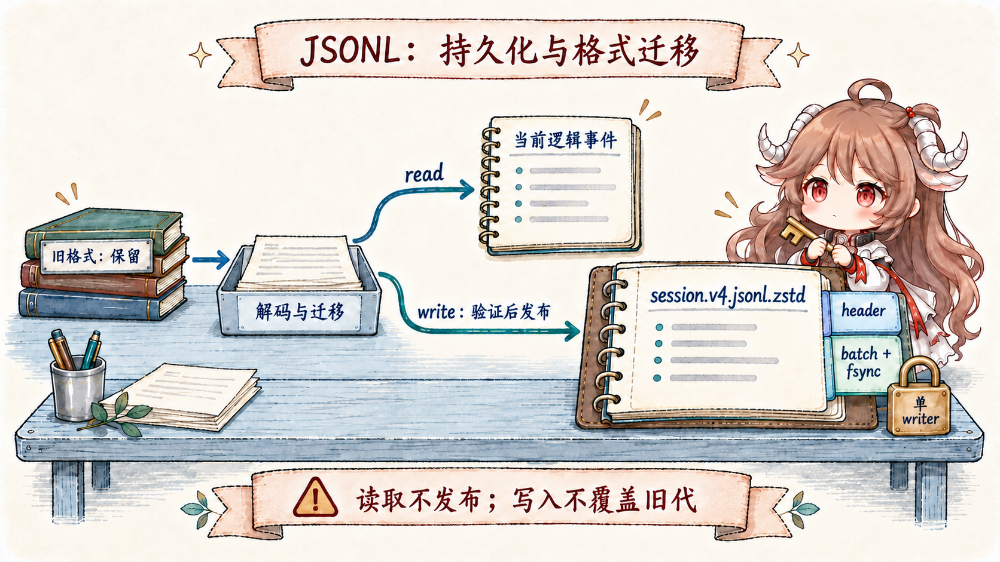

一条付款、发信或改文件操作至少有四个时刻：模型产生调用；runtime 持久化“准备调用”；外部世界接收动作；runtime 持久化结果。进程可以在任意相邻时刻之间退出，恢复动作必须依据已经留下的证据和工具语义决定。
DSH 用 SessionEvent 保存意图和结果，用 checkpoint policy 在副作用前完成持久化，用 approval 与 sandbox 分别管理授权和执行约束，再用 repair 把未闭合调用分类为“未开始”或“结果未知”。
阅读契约。读完以后，你应该能回答：为什么 durable tool/call 必须早于工具体；内存中的 append() 怎样跨过存储边界；ask、never 和 allowed-once 分别在哪里生效；approval 与 sandbox 分别怎样约束动作；以及为什么看到 TOOL_OUTCOME_UNKNOWN 时绝不能盲目重放副作用。
源码范围。本文依据提交 687f282，跟踪第一方 JSONL persistence 与 checkpoint policy 的组合路径。外部系统的幂等键和状态查询决定未知结果能否安全重试。
一、先记录调用，再允许执行
1.1 assistant message 和 tool/call 是两份不同证据
Agent loop 先把含有 tool calls 的 assistant message 追加到 Session。随后 executeToolCalls() 为每一项追加 tool/call 事件，再进入 prepare 与 guard；真正的工具体拿到控制权前，tools/execute checkpoint 才把这段前缀变成 durable。settlement 完成后，结果再作为 tool/result 进入同一个事件源。
assistant message 保存模型提议，tool/call 则记录调度器开始处理的调用；其日志字段仍保留原始参数字符串，解析后的参数进入工具执行上下文。工具体只能在 flush 成功后运行，但后台批处理也可能更早落盘，因此 durable call 记录的是已处理的意图，恢复端须保守地承认动作可能已经发生。

1.2 工具管线保留一个不可绕过的顺序
tools runtime 先运行 tools/pre-execute waterfall。gate 可以返回 allow、deny、ask 或 cancel；approval seam 把交互结果收敛为 allowed-once、rejected、cancelled 或 unavailable。pre-execute 之后还有 monotonic guard，确保较弱的后续决策不能把已关闭的门重新打开。只有通过后才进入 tools/execute，最后运行 post hook。
Checkpoint policy 只拦最外层调用：exec.agent 已定义且 exec.parent 未定义。嵌套 dispatch 复用外层已经建立的 checkpoint，避免每一层都重复 flush，也避免子工具绕开最外层的事实边界。
ctx.on('tools/execute', async (exec, next) => {
if (exec.agent === undefined || exec.parent !== undefined) return next()
await ctx.sessions.flush(exec.agent.session)
if (exec.signal.aborted) return abortedBeforeDispatchResult()
return next()
})二、把已提交事件持久化
2.1 Persistence backend 和 checkpoint policy 是两层能力
Session 的 append() 建立内存中的原子事件提交；persistence plugin 可以 write-behind。后端可以批量写入这些提交；崩溃会丢失仍停留在缓冲区的事件。session-checkpoint-policy 单独定义语义 checkpoint：继续下游之前，哪些先前事件必须跨过存储边界。
2.2 三个 barrier 分别保护三种不可逆前进
agent/pre-step：开始下一推理 step 之前，上一阶段事实先 durable。- 关联有效 Session 的每次
llm/stream：返回的流首次被消费时，真正向 provider 发请求前才 lazy flush，避免没有网络动作时的无谓同步。 - 最外层
tools/execute：工具体看到控制权前，含tool/call的前缀必须 durable。
session/flush 在下游 adapter 或工具体之前完成；失败时阻止派发。若等待 flush 时取消，policy 返回 ABORTED_BEFORE_DISPATCH。已有 durable call 而结果缺失时，恢复端继续保留“动作可能发生”的判断。
三、Approval 和 sandbox 解决不同问题
3.1 Approval 决定“这一次是否允许”
user-approval 提供 channel-neutral 的一次性请求 ctx.approval.request(req)。ApprovalPolicy 只有 ask 与 never：ask 才会派发 approval/request；never 在交互前直接拒绝。请求必须处于开放 turn 内；approval/asked 与 approval/decided 成对记录审计。模型不读取这两条事件，但能看到工具结果，以及追加到保留历史之后的当前策略快照。
缺少 answerer、answerer 抛错、请求被取消都拒绝授权。策略可由日志中的 approval/policy 覆盖，最后一条事件胜出；审计 append 失败会使请求拒绝。策略切换为下一步追加通知。调用方可提供 displayReason 展示本地化理由，日志继续保存原始 reason，因此界面语言和审计文本各有明确来源。
3.2 Sandbox 决定“即使允许，也只能怎样执行”

SandboxProvider 支持 read-only 与 workspace-write 的受限执行；ctx.sandbox.confine(argv, policy) 返回包装后的 argv 和执行完整度。没有可用 backend 时以 SANDBOX_UNAVAILABLE 拒绝。danger-full-access 则明确绕过隔离，由调用方执行原 argv。
本地 provider 在 Linux 优先 bubblewrap、再尝试 Landlock；macOS 使用 Seatbelt；Windows 使用 ACL/restricted-token 路径。Windows 为同一 workspace 共享写权限，为每个 live session/workspace 配对建立独立临时目录、SID 和可撤销 ACE；新 provider 使用新目录。Windows 与较旧 Landlock ABI 可报告 partial，调用方应按所需隔离强度处理。Windows 的限制包括硬链接路径别名、未限制的读取，以及部分 AppContainer ACL 目录不可读。
四、JSONL 怎样把 checkpoint 变成可恢复前缀
4.1 一帧 header，一帧 durable batch

格式目录将当前写入代定义为 v4：文件为 session.v4.jsonl.zstd，也可配置 raw JSONL。每代由一个独立校验的 header frame 和多个 durable batch frame 构成。存储 handle 持有写入序列与 live-event buffer，内部 200ms 窗口合并事件；session/flush 绕过窗口，等待后端排空并同步。
4.2 首次发布、追加失败和 torn tail 都有明确边界
create(header) 先返回写 handle，不立即建文件；首次 append 将 header 与事件写进临时文件并 fsync。显式 flush 一个空 session 也会发布只有 header 的文件。POSIX 用不覆盖目标的 hard link 发布并 fsync 父目录，Windows 走 write-through rename；后续追加各自 fsync，捕获写入或同步错误后 truncate 回原长度。
读取时保留 torn final frame 中完整解码的 records；写 handle 在下一批写入前截断 torn bytes 并把这些 records 持久化重写，resume 再追加必要的合成 closers。完整 frame 的校验、解压或结构损坏会拒绝恢复。写 handle 在进程内独占，跨实例和进程还有内核锁：POSIX 使用 session.lock 上的 flock，Windows 使用命名 semaphore；锁持有进程退出后释放，活着但卡住的进程仍阻止第二个 writer。
4.3 读取旧格式与发布新格式是两件事
迁移发布路径从后端选出的最高 canonical generation 开始。open(id, 'read') 解码、迁移并验证旧格式，返回当前逻辑事件；open(id, 'write') 再把准备结果编码到同目录临时文件，经过 Worker 验证、来源 revision 与相关子会话检查后，无覆盖地发布当前代。验证器只有收到成功响应且 Worker 自然以 0 退出后才接受结果；错误或取消会终止并等待 Worker 退出。旧文件保持原字节。
v4 迁移会收集直系子会话的 header 与 descriptor，补齐父会话的 subagent/catalog。缺失或损坏的 descriptor 可保留为模式未知的目录成员，已知条目继续可用；直接读取损坏子会话仍报告其错误。历史 revision 包含根目录所选日志的元数据指纹，子会话变化会使缓存失效；读取遇到来源漂移重试一次，写入拒绝发布。当前 v4 打开跳过这次历史目录发现。
迁移成本与状态也影响读取方式：stat/list 提供 formatStatus；历史日志的 revision 计算随根目录会话数增长，冷启动准备还要读取直系子会话正文。只读访问保留旧物理代，写入成功后才转为 current。后端卸载会先等待由自身服务注入触发的消费者清理，再移除监听并排空 handle。
五、Crash repair 必须区分未开始与结果未知
5.1 日志前缀提供恢复判断的证据

| 崩溃前 durable 前缀 | 修复结果 | 恢复建议 |
|---|---|---|
assistant 含 tool call；没有 tool/call | TOOL_NOT_STARTED | 确认仍有需要后可重新 dispatch |
有 tool/call；没有 tool/result | TOOL_OUTCOME_UNKNOWN | 只读或幂等时可重试；否则先查询外部状态或询问用户 |
tool/call 与 tool/result 都在 | 正常完成前缀 | 从下一步 resume |
ToolCallRecovery按 assistant 顺序合成缺失的工具结果。只有同一 turn/step、surfaceOp: append 的匹配结果才解除 pending；裁剪产生的 replacement 不会替另一调用结算。崩溃恢复再补 step/end 与 interrupted turn/end。实时 step 失败路径也会在关闭 step 前追加这些保守结果，然后重新抛出原错误；它们向模型呈现不确定性，后续动作仍依据工具语义决定。
fork seed 使用同一恢复器，但结束原因为 forked。即使分支内记录 TOOL_NOT_STARTED，父会话也可能在 fork 点之后执行过该调用；有副作用的重试仍需先核查外部状态。上表描述当前会话崩溃后的持久化前缀，不能直接用来推断父会话后续动作。
5.2 用 callId 关联外部幂等结果
对有副作用的工具，DSH 建议把 exec.callId 传给支持幂等键的外部系统。这样一次未知结果可以通过查询或同键重试收敛。但如果目标系统不支持幂等、查询或事务，runtime 不能凭本地日志证明动作只发生一次。read-only 或天然幂等的调用可以更积极地恢复；付款、发信和删除必须保守。
六、这条执行路径带来的工程判断
- 第一方 durability 要同时装 backend 与 policy。只有 persistence 没有 checkpoint，副作用可能领先 durable 日志；只有 policy 没有兑现 flush 的 backend，也没有实际保护。
- 分别检查授权与执行约束。approval 确认本次同意，sandbox 限制本次操作可访问的资源。
- Fail closed 是明确的可用性取舍。answerer、sandbox 或 flush 不可用时停止，会丢掉一次机会，却不会偷偷扩大权限或制造不可解释的动作。
- 未知结果按工具语义决定恢复。本地结果缺失时，外部动作的结果仍然未知。
- 自定义工具要传播 callId。能把本地调用身份接到外部幂等键，才有机会把 at-least-once 风险收敛成可验证结果。
下一篇跟踪 compaction 如何替换模型可见消息、裁剪工具结果，并用原始事件、工具历史与请求 header 重建后续请求。
参考源码
- session-checkpoint-policy README 与 实现：三个 durability checkpoint、top-level 工具边界与取消语义。
- tool-calls.ts 与 tools runtime：调用事件、gate、execute 和 result 顺序。
- user-approval README：一次性决策、审计事件与 fail-closed 结果。
- sandbox contract 与 local provider：策略模式、平台 backend 与限制。
- session-persistence-jsonl README：frame、batch、fsync、发布与 torn-tail 恢复。
- repair.ts：未闭合 tool、step 与 turn 的保守修复。